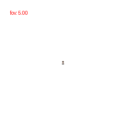
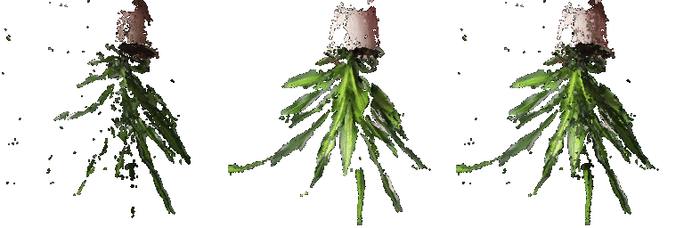
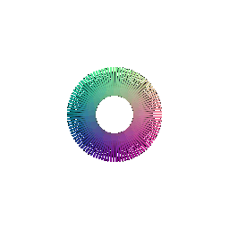
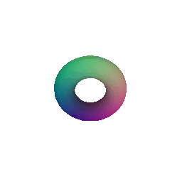
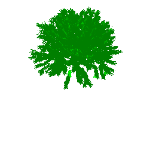
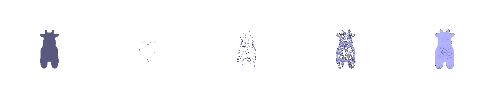

# Assignment 1: Rendering Basics with PyTorch3D
Submission : On your webpage, include a gif with your dolly zoom effect.
Submission: On your webpage, you should include a gif that shows the cow mesh from many continuously changing viewpoints.

Submission : On your webpage, show a 360-degree gif animation of your cube. Also, list how many vertices and (triangle) faces your mesh should have.

Tetrahedron:
Verticles: 4
Faces: 4
Submission : On your webpage, show a 360-degree gif animation of your tetrahedron. Also, list how many vertices and (triangle) faces your mesh should have.

Cube:
Verticles: 8
Faces: 12
Submission : In your submission, describe your choice of
color1andcolor2, and include a gif of the rendered mesh.

Color1 is mix of Red and Green: color1=torch.tensor([1,1,0])
Color2 is mix of Green and Blue: color2=torch.tensor([0,1,1])
Submission : In your report, describe in words what R_relative and T_relative should be doing and include the rendering produced by your choice of R_relative and T_relative.
R_relative and T_relative are transforming the pose with respect to the frame w/t R_0 and T_0
Transformation-1

This is a rotation of around 90 degress in 'z' axis
rotation= R.from_euler('z',-90,degrees=True)
R_rel=rotation.as_matrix().tolist()
T_rel=[0,0,0]
Transformation-2

This is just a pure translation of 3 units around 'z' axis
Transformation-3

This is achieved by a slight rotation of 5 degrees around "y" axis and translation by 0.2 units in "x" axis
rotation = R.from_euler('y', 5, degrees = True)
R_rel = rotation.as_matrix().tolist()
T_rel = [0.2, 0, 0]
Transformation-4

This is achieved by rotating by 90 degress along "y" axis and then translating to first compensate for original translation and then translated with respect to the new rotated coordinate system by 3 units
rotation = R.from_euler('Y', 90, degrees = True)
R_rel = rotation.as_matrix().tolist()
# According to the rotated frame
T_rel = [-3, 0, 3]

From left to right: generated point cloud renderings from Image1, Image2 and Combined by the union of both
Submission : In your submission, include a gif of each of these point clouds mentioned above side-by-side
Submission :
- In your writeup, include a 360-degree gif of your torus mesh, and make sure the hole is visible. (10 points)
- In addition, discuss some of the tradeoffs between rendering as a mesh vs a point cloud. Things to consider might include rendering speed, rendering quality, ease of use, memory usage, etc. (5 points)
- Include a 360-degree gif on any new object of your choice. This object can be different from what you used in 5.2 (5 points)


Submission :
- In your writeup, include a 360-degree gif of your torus point cloud, and make sure the hole is visible. You may choose to texture your point cloud however you wish. (10 points)
- In your writeup, include a 360-degree gif of your torus point cloud, and make sure the hole is visible. You may choose to texture your point cloud however you wish. (10 points)

Trade-offs Between Rendering as a Mesh vs. a Point Cloud:

Submission: Include a creative use of the tools in this assignment on your webpage!
I aimed to illustrate how a tree transforms across different seasons: Summer, Autumn, and Winter.

Procedure: I downloaded the object file from Tree Obj Source post which I changed the texture of the tree dependending on the rotation angle.
Submission : Render each pointcloud and the original cow mesh side-by-side, and include the gif in your writeup.

From left to right: Original Cow mesh, Generated points with sample size: [10,100,1000,10000] respectively
The rendering generated from 10000 points looks very similar to the original mesh